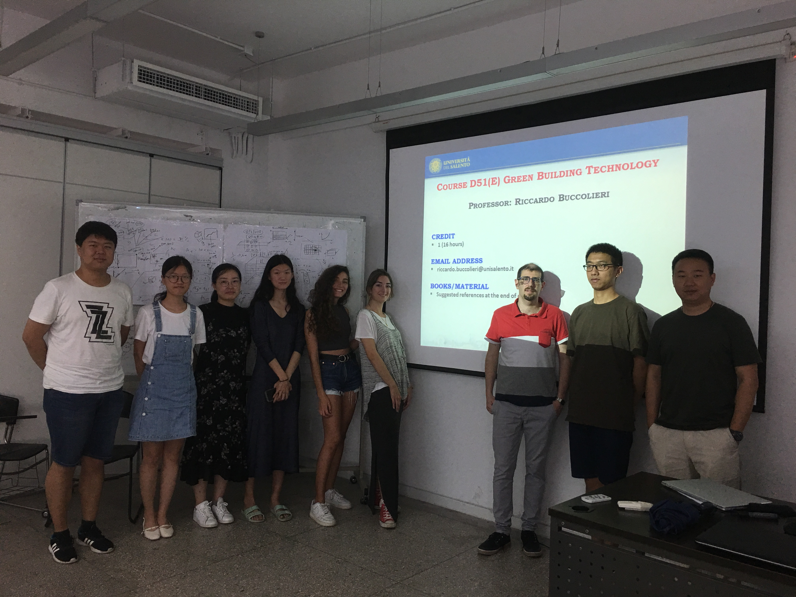
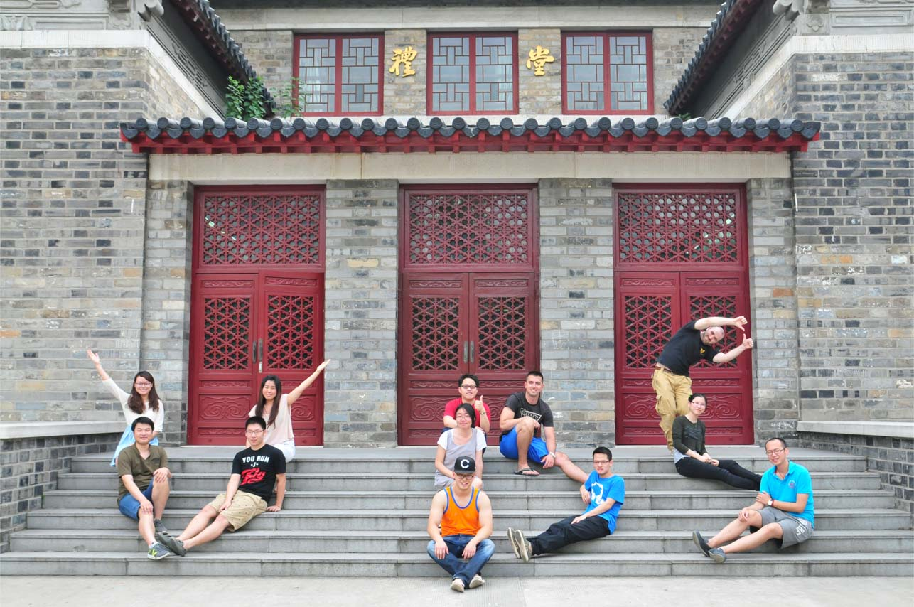

| 工作坊01(10days)： |
 |
Green Building Technology 课程是面向研究生开设的为期10天的理论和实践课程，由Prof. Riccardo Buccolieri讲授。 课程目标：该课程向学生全面介绍了大气边界层、城市冠层、能量交换、城市热岛效应以及城市通风指标在城市微气候应用研究的理论基础，以及城市微气候相关问题的研究方法，为学生建立了较为全面系统的理论知识框架。 同时，课程基于理论基础，提供了ENVI-MET和ADMS两个应用于城市微气候研究的模拟工具，拓展了学生的研究视野的同时，实践应用模拟工具解决城市污染物扩散问题，加深了从理论到实践两个环节的过渡和理解认知。 课程还就英文学术写作进行了讲解，并以研究报告的形式，要求学生提交英文软件模拟应用报告，作为课程成绩的考核。该作业在强化研究生对软件应用的理解同时，训练了英文报告的写作技能。 导师 Dr. Prof. Riccardo Buccolieri是 意大利萨兰托大学大气物理学的助理教授, 城市微气候、城市通风与污染物扩散urban microclimate, urban ventilation & pollutant dispersion领域的知名学者， Building and environment, Atmospheric environment等专业TOP级SCI期刊的审稿人，Atmosphere期刊的客座编辑。 |
| 工作坊02(15days)： |
 |
Introduction to the fundamentals and applications of the “Virtual Design Studio (VDS)” - a digital platform for integrated, coordinated and optimized design of building energy and environmental systems (BEES); Exploration of multi-disciplnary, multi-objective, and multi-stage design process and methodlogy assisted by the VDS; Understanding of the flows of heat, air, moisture and pollutant in BEES and their impacts on the energy and environmental performance of buildings; Analysis of effects of climate and site, form, massing and orientation, internal configuration, external enclosure, and environmental control system on building performance using VDS; Exploration of integrative and innovative technologies in the design of ‘green’/sustainable buildings from canonical to real world case studies. 导师 Prof. Jianshun (Jensen) S. Zhang Syracuse University - L.C. Smith College of Engineering & Computer Science 223 Link Hall, Syracuse NY 13244, USA jszhang@syr.edu |
| 建筑技术科学相关课程，其他课程参加学院培养计划。 |
|